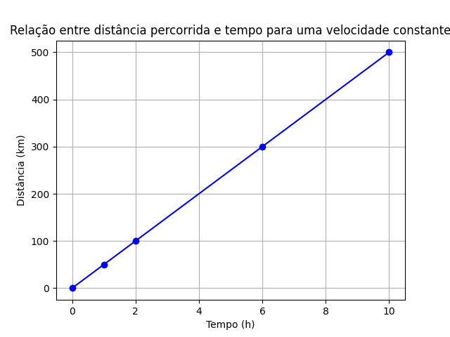

Questões de revisão: gráficos
O gráfico abaixo será usado em todas as questões desse tópico.

Figure 1: Gráfico de distância em quilômetros por tempo em horas.
Questão 1
Considere que o gráfico acima representa o movimento uniforme de um carrro em uma rodovia.
- a) Qual é a distâcia percorrida em 6 horas?
- b) Qual é a distância percorrida em 3 horas?
c) Qual é a velocidade do carro?
Observação: lembrando que
\begin{equation} v = \frac{d}{t} \end{equation}
Questão 2
Construa uma tabela relacionando distância e tempo para o movimento descrito no gráfico acima.
Questão 3
- a) Faça um novo gráfico, considerando, um segundo carro que tem o dobro da velocidade do primeiro (o primeiro é o que está representado acima)
b) Faça um novo gráfico, agora relacionando posição e tempo, com a mesma velocidade do item anterior. Porém, sabendo que o carro começa em 100 km; ou seja, para \(t\)=0 , \(d\) = 100 km.
Sugestão, faça primeiro uma tabela:
tempo (h) Posição (km) 0 100 2 - - - - - - - - -